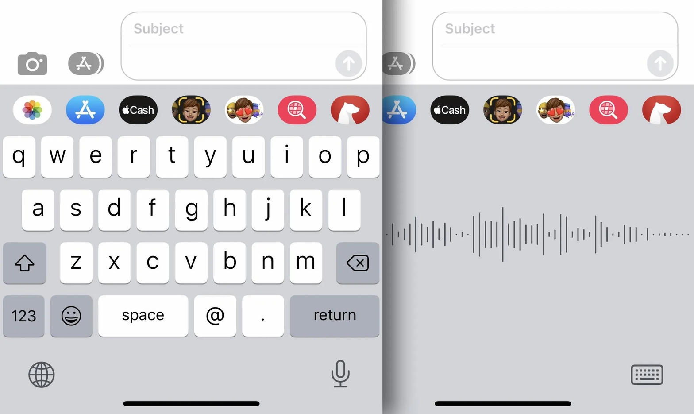

How to read this letter
Two kinds of claim live here. One is public measurement. Word error rates, homophone failure, punctuation that never enters the score, error compounding in multi-step agents. Those can be checked. The other is testimony from one man in Fresno who has talked to machines since 2016 and has talked people through language loops in workplaces for longer than that. Testimony is not a court finding. It is a timestamped observation. Keep the two stacks separate or the letter becomes slop of its own.
The 2016 habit
In the early part of 2016 he began using speech-to-text while a marriage was ending. Messages went to his wife. The machine heard neighboring words. He found himself writing a second sentence to explain the first sentence, because the first sentence was no longer his.
That is not a story about a bad product. That is a story about a third interpreter entering a conversation that already could not agree on what had been said.
Ten years later the same man still talks to the glass. He does not always look at what the glass wrote. He says looking changes the flow. He repeats the same meaning in different phonetic shapes so the machine can triangulate. He does the same thing with people whose spoken English is not yet as fast as their skill. The method is mercy and it is also a tax.
Thereof is one word.
A system that can finish your paragraph can still split a closed English word and insert quotation marks you never spoke. Those are not deep mysteries. They are substitutions and insertions. Speech-to-text scores them the same as an um. Meaning does not.
What is actually proven about the ear
Automatic speech recognition still fails in a short list of predictable ways. Homophones have no acoustic difference. Their, there, and they are is a context guess. Short utterances give the model nothing to guess with. Rare words, names, and command-line tokens get replaced by nearby English. Linux becomes Lennox. Fiduciary becomes food dictionary. In quote becomes a quote mark after the wrong word, plus a second quote later that no mouth produced.
Industry benchmarks in 2026 put average English word error rates for strong models in the mid single digits on clean read speech and closer to 7 to 12 percent on mixed real recordings. Meeting rooms and overlapping talk run much worse. Word error rate usually ignores punctuation and casing. A transcript can look numerically fine and still be a different document.
Researchers keep adding a second stage for exactly this reason. A 2025 paper on generative post-processing for speech-to-text treated punctuation, homophones, and non-native speech as unfinished business, not as solved weather. The machine does not refuse to learn because it is spiteful. It does not have a care to withhold. It maximizes a local score. Your true meaning is not that score.

The slop that is not the model
Slop, as the public now uses the word, is the flood of low-grade generated content. Merriam-Webster made it the 2025 Word of the Year. Simon Willison pushed the label in 2024 because the web needed a word with the same job as spam. That definition is real and it is incomplete.
The slop in this letter is smaller and closer. It is the insert that nobody reviews. A stray quote. A split thereof. A command that is almost Linux. Each one looks like a stain. The stain is not what makes it dangerous. The danger is that a fluent paragraph will carry the stain into the next paragraph, and the next system will treat the stain as ground.
That is not a claim that today’s chatbot is a killer. It is a claim about pipelines. A 95 percent accurate step, run ten times, lands near 59 percent if the steps are independent. They are not independent. An error at step two becomes context at step three. 2026 papers on cascading hallucination in agent pipelines describe the same shape: early factual error, later narrative, later invisibility. One study of a four-agent financial pipeline found that raw injected errors became derived numbers, then prose, then approved conclusions. Detection fell as the error dressed itself. When you verify matters more than whether you verify.
So yes, perhaps. In medicine, law, operations, and any loop that feeds its own output back in, an uncaught insert can become a decision. The word deadly belongs to those domains when the loop is closed and no human still owns the sentence. It does not automatically belong to a kitchen dictation. Conflating the two is how a true mechanism becomes a slogan.
The workplace version of the same ear
He says the same method shows up at work. A colleague whose first language is not English needs the colloquialism and the Linux line. The hard problem is not the one an off-the-shelf model already solved. The hard problem still needs the person who can hear both the command and the frustration. He spends the time. The other person’s board looks more productive. His does not. He has watched that pattern more than once. He is willing to take the blame for the time he spent.
The specific Comcast assignment, the colleague’s prior earnings, and the firing are his testimony. They are not independently verified in this letter. The transferable mechanism is verified in every shop that has ever had a translator who was not given a translator’s title. Invisible repair labor does not hit the dashboard. Opportunity cost does. A person who prevents other people from spinning in language loops will look slower than the person who collected the loops and shipped the output. That is not unique to one company or one nationality. It is what happens when spoken language skill is treated as a personal defect instead of as a production constraint.
Call the missing virtue by its right name. Fiduciary responsibility to the shared clock. Not food dictionary. The insert already did that work once.
Why he will not look
He keeps the flow on purpose. Looking at the line would catch thereof. It would also break the sentence that is still arriving. That is a real trade. Conversation analysts have a name for the human version: repair. You stop, you mark the trouble, you try again. Repair costs time. Fluent systems sell you the feeling that repair is no longer required.
That is the Hightower Derivative at kitchen scale. First-order: the tool writes the words. Second-order: you stop performing the 2016 ritual of explaining the error, because the paragraph now looks like English. The path goes quiet. The quote mark that nobody spoke becomes a thought that nobody intended. A red herring is born from a missing post-process, not from a mind.
The machine does not seem to care because care is not in the objective. The inconceivable part is not that it failed. The inconceivable part is that a system asked to understand meaning still cannot be trusted to know that thereof is one word unless a human spends the pause.
What to keep
Keep the redundant phonetics. That is a legitimate strategy for both machines and people. Keep the mercy for the coworker who is faster in another language than he is in this one. Do not keep the story that slop is the model being dumb. The model is often fluent. Fluency is how the insert hides.
If there is a measurement here, it is the pause. In 2016 the pause was forced. In 2026 the pause is optional. Optional is how a gutter utterance becomes a recursive cycle. Optional is how a quote mark becomes a doctrine. Look when the sentence will leave the room. Let the flow run when the sentence is still only yours.